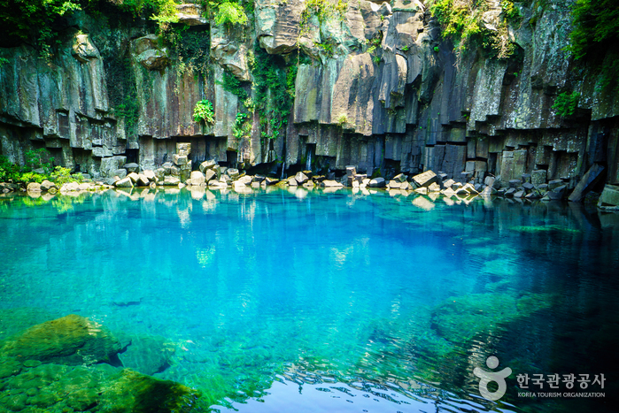

The Grand Somurom with their infinity pool and overlooking Beomseom Island, stretches a total length of 33 meters and is situated just 50 meters away from the sea, providing a stunning view.
Customer satisfaction rate:
Reservation progress bar:
• Location
• Gallery
• Contact Us

Manjanggul Lava Tube

Cheonjiyeon Waterfall